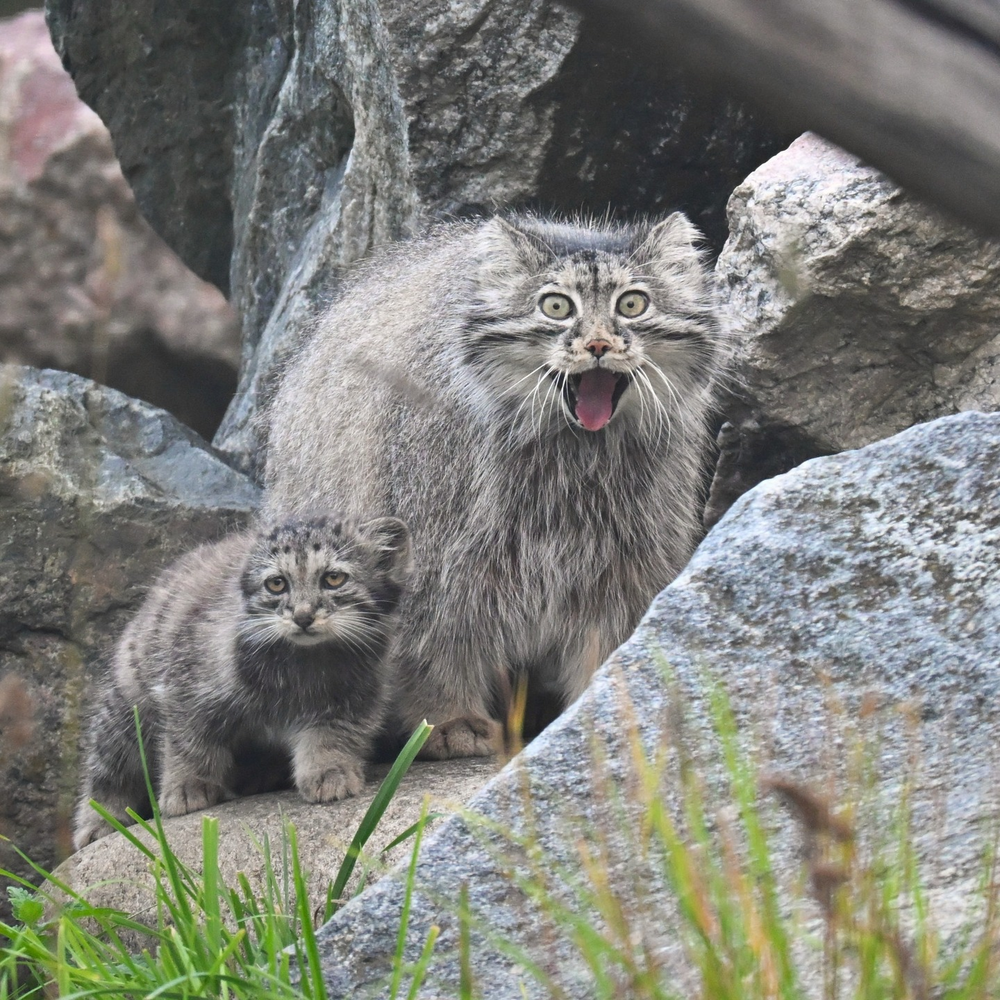
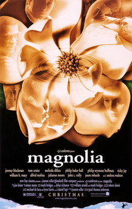
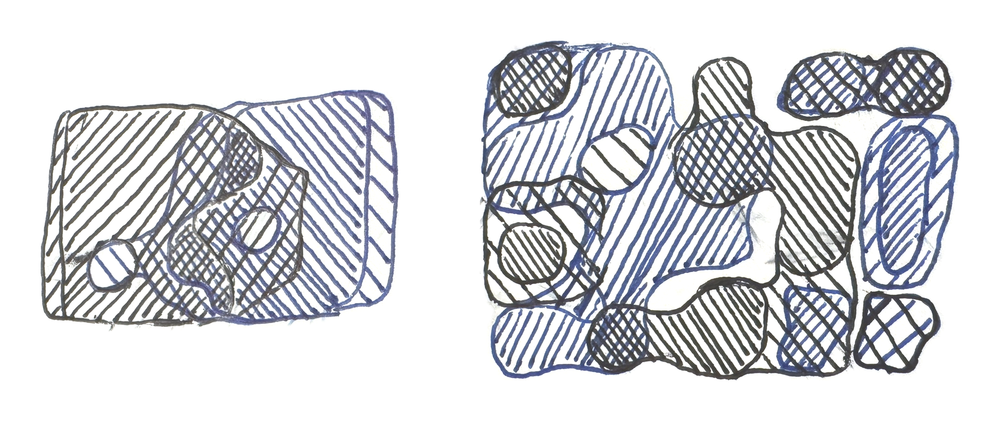
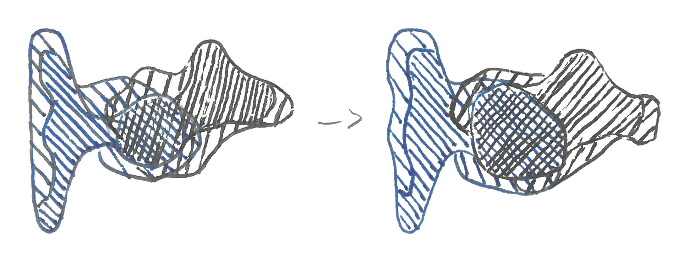
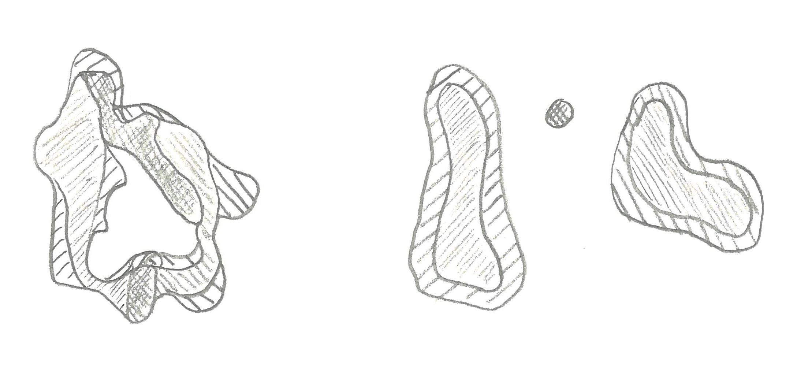

I (Finn Cairns) go to and sail at Dartmouth. You can , meet with me, or find me on letterboxd or linkedin.

I worked at Second Look @ XLab @ UChicago this summer and wrote:
I get a reminder of it that consistently makes me very happy and I think it might make you happy too!
If you have an iPhone you can get reminded by doing this:
I like this live one too!

When do we solve the slop problem?

and also more of these again
but think I mostly have these now (which are still nice!)